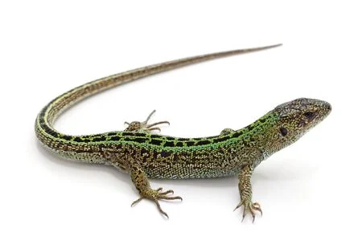

Kısaca: Kertenkele Familyası: Özkertenkelegiller (Lacertidae) vs.’dir. Yaşadığı yerler: Genellikle sıcak bölgelerde. Özellikleri: Vücutları pullu, göz kapakları hareketli, kuyrukları uzun ve sivridir. Kuyrukları yakalanınca kopar (ototomi). Etçildirler. Beş parmaklı ayaklarının hepsi tırnaklıdır. Çeşitleri: 3000’den fazla türü vardır. En çok bilinen iki türü, koruluk ve çayırlarda rastlanan yeşil kertenkele ile duvarlar üstünde çok görülen duvar kertenkelesidir. Kertenkeleler (Lacertilia) alt takımının, özellikle özkertenkelegiller (Lacertidae) familyası türlerinin genel adı.
Kertenkele Familyası: Özkertenkelegiller (Lacertidae) vs.’dir. Yaşadığı yerler: Genellikle sıcak bölgelerde. Özellikleri: Vücutları pullu, göz kapakları hareketli, kuyrukları uzun ve sivridir. Kuyrukları yakalanınca kopar (ototomi). Etçildirler. Beş parmaklı ayaklarının hepsi tırnaklıdır. Çeşitleri: 3000’den fazla türü vardır. En çok bilinen iki türü, koruluk ve çayırlarda rastlanan yeşil kertenkele ile duvarlar üstünde çok görülen duvar kertenkelesidir
Dişiler, yazın toprağın içine veya bir taşın altında çengel tırnaklı ayaklarıyla açtıkları çukurlara yumurtlar. Kış mevsiminde deliklerinin içinde ilkbahara kadar kış uykusuna yatarlar. Soğukkanlı olduklarından taşlar üzerinde güneşlenmeyi severler. Yakınlarından geçen böceklere saldırarak beslenirler. Renkleri yaşadıkları ortamlara uyduğundan kolay fark edilmeyip, yırtıcı kuş ve yılanlardan kolayca kurtulurlar. Tehlike anında kuyruklarının son kısmını kopararak hızla bir yarığın içine dalıp gözden kaybolurlar. Böcek ve kurtlarla geçindiklerinden insanlar için faydalı sayılırlar.
